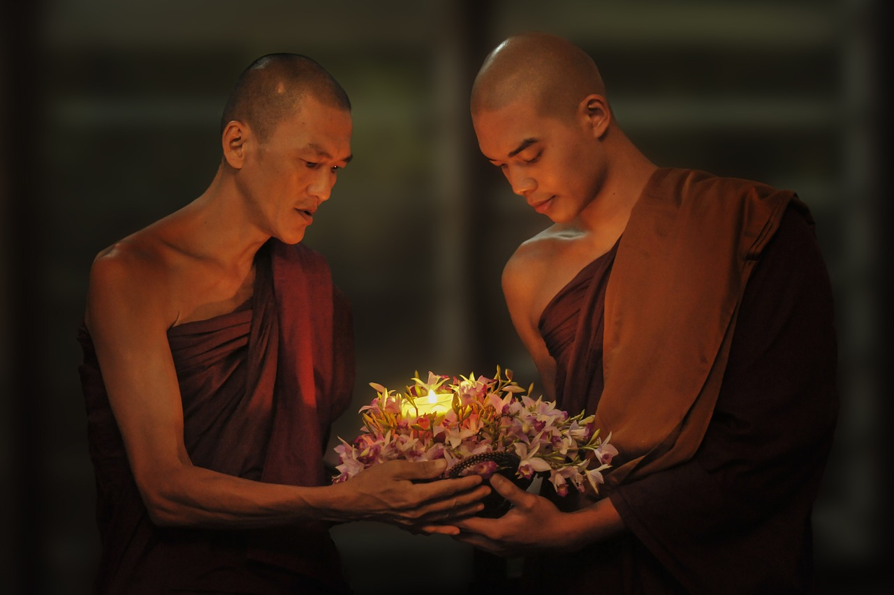

那種「神秘」的力量，到底是什麼？
濟群法師
每次聽到「加持「二字，都覺得很玄幻。似乎可以從佛菩薩或高僧大德那裡，得到某種秘不可宣的力量。加持力到底是什麼？
其實這個道理並不複雜，也不神秘。比如我們和不同的人在一起，就會引發不同的心理。
和愛生氣的人在一起，容易引發內在的嗔心；和貪婪的人在一起，容易引發內在的貪婪；和慈悲的人在一起，會喚起內在的慈悲；和安詳的人在一起，則會喚起內在的安靜。
我們想一想，世間普通人尚且會帶來這些影響，何況我們以開放的心面對佛菩薩，自然會因為他們的智慧和德行，引發內心的正向力量。
當我們得到這種加持時，確實可以擺脫恐懼，感到很安全，很有力量。
我們可以選擇一位菩薩作為自己的修學楷模，瞭解他的德行和法門。否則，我們說到某個菩薩名號時，可能只是一個概念，缺乏力量。
這就需要賦予其修行內涵，比如以普賢菩薩為皈依對象，就要查找有關普賢菩薩的經文，瞭解他在因地的發心、願力和修行法門，效仿他的願心和行持。這就是修本尊法。
漢傳佛教雖然沒有這個說法，但很多人修行時也會選擇和自己相應的菩薩，修習這位菩薩的法門。
從修行上說，是徹底放棄對自我的保護，對佛菩薩完全開放，沒有任何保留。這樣才能和佛菩薩感應道交，得到加持。同時，這種加持還能喚起內心的正向力量。